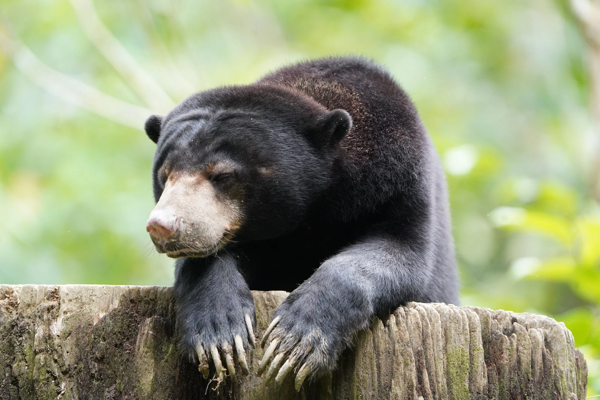
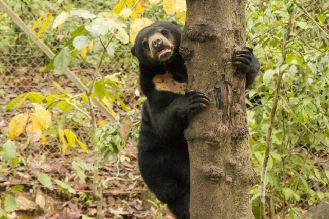
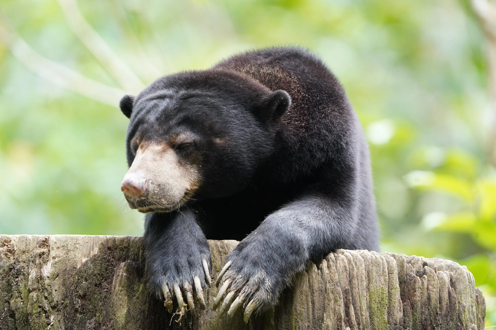
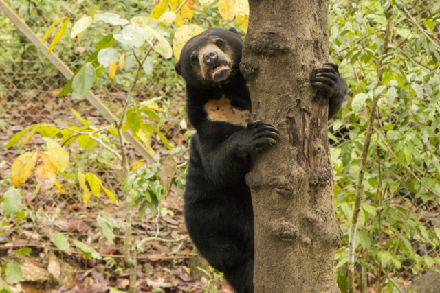

Bornean Sun Bear Conservation Centre
Located in Sepilok, Sandakan, BSBCC rescues and rehabilitates sun bears that were kept illegally as pets or captive animals. The centre helps them relearn natural behaviours while educating visitors about conservation. Surrounded by Sandakan’s rich forests and wildlife, it highlights the town’s strong connection to nature.